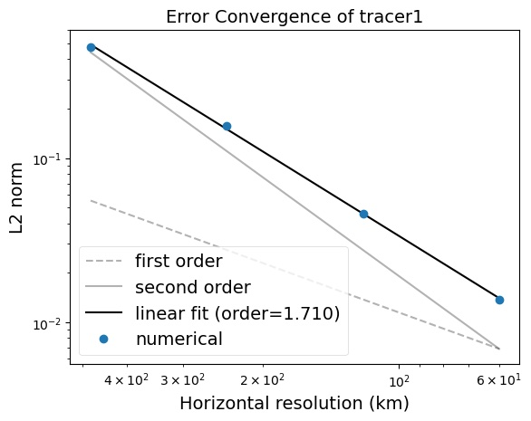
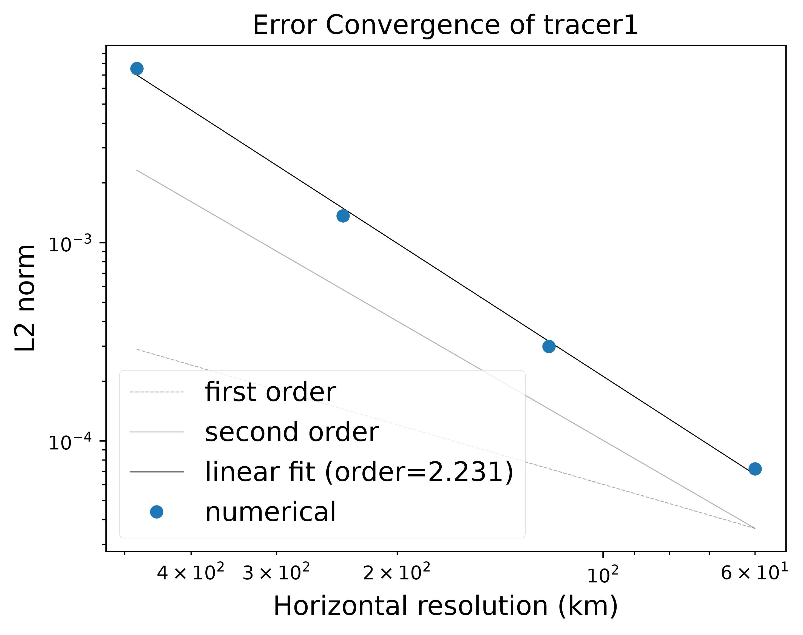
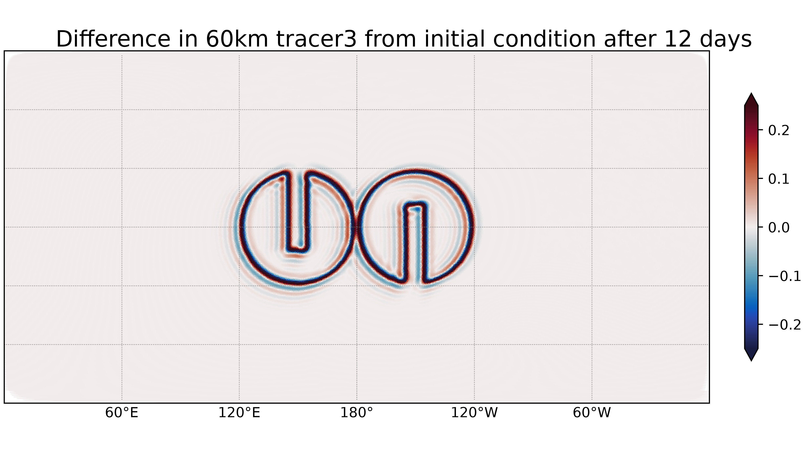
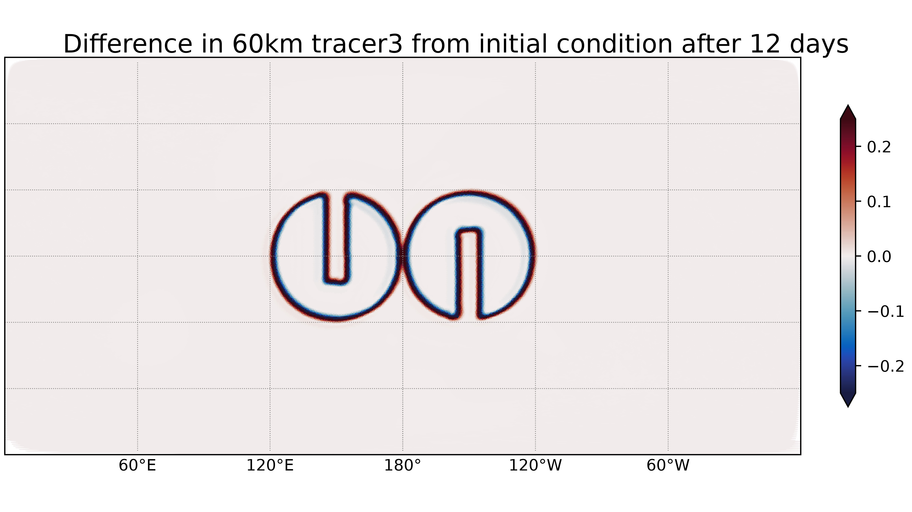

Tracer Advection
How Omega advects tracers horizontally, including the monotone flux-corrected
limiter. The options that select these schemes are described in
Advection. Both are implemented by the
TracerHorzAdvOnCell term in src/ocn/TendencyTerms.h and
src/ocn/TendencyTerms.cpp.
Second order horizontal advection
The horizontal advection is done independently within each ocean layer so a two dimensional scheme is required to advect mixing ratios. The second order horizontal advection scheme is described by Skamarock and Gassmann (2011), and only a summary of a few equations from that paper are reproduced here.
The conservative form of the scalar transport equation within a fluid is given in equation (1) of Skamarock and Gassmann,
For higher order flux calculations, higher order derivatives of \(\psi\) are needed and for the user option of TracerHorzAdvOnCell along with HorzTracerFluxOrder set to 3, a quadratic approximation of \(\psi\) is used,
The second order derivatives of \(\psi\) are then combined as shown in equation (11) of Skamarock and Gassmann to get a second order horizontal transport algorithm.
The computation of these second order fluxes is complicated by having to do these computations on a sphere. Figure 2 from the Skamarock and Gassmann paper describs the slight modifications needed to compute the entries of the \(\mathbf{P}\) matrix for a spherical geometry where the distances need to be measured as arc lengths along the surface.
In practice, the convergence of this higher order algorithm on a sphere is slightly below second order. For the advection of a \(\psi\) in the shape of a cosine bell being advected around a sphere and compared with the analytic solution, the spatial convergence for grid refinement is about order 1.7 as shown in Fig. 11:


Fig. 11 Tracer higer order convergence example of a cosine bell advected on a sphere showing an order 1.71 convergence rate
Monotonic flux-corrected transport
It is well known that higher order (order 2 and above) scheme for numerically integrating fluxes suffer from dispersive “ripples” in the results particularly near steep gradients. Lower order schemes produce no ripples but suffer from excessive numerical diffusion. Flux-corrected transport (FCT) is a technique which embodies the best of both schemes.
The implementation of a monotonic flux-corrected transport (FCT) in Omega follows a standard algorithm as given in Zalesak (1979).
The procedure is as follows given the notation above:
Compute \(F^L_{i+1/2}(u\psi)\), the transportive flux by some low order scheme guarenteed to give monotonic (ripple-free) results.
Compute \(F^H_{i+1/2}(u\psi)\), the transportative flux by some high order scheme.
Define the “antififfusive flux”:
\[ A_{i+1/2}(u\psi) = F^H_{i+1/2}(u\psi) - F^L_{i+1/2}(u\psi) \]Compute the updated low order (“transported and diffused”) “td” solution:
\[ w^{td}_i = w^n_i - \frac{1}{\Delta x}[F_{i+1/2}(u\psi) - F_{i-1/2}(u\psi)] \]Limit he \(A_{i+1/2}(u\psi)\) in a manner such that \(w^{n+1}\) as computed below is free of extrema not found in \(w^{td}\) = \(w^n\);
\[ A^C_{i+1/2}(u\psi) = C_{i+1/2}(u\psi) A_{i+1/2}(u\psi), \quad \quad 0 \leq C_{i+1/2} \leq 1 \]Finally apply hte limited antidiffusive fluxes:
\[ w^{n+1}_i = w^{td}_i - \frac{1}{\Delta x}[A^C_{i+1/2}(u\psi) - A^C_{i-1/2}(u\psi)] \]


Fig. 12 Tracer higer order convergence example of a cosine bell advected on a sphere with FCT showing an order 2.23 convergence rate
Example: limiting the ripple effect
The effect of monotonic higher order FCT horizontal transport verses just higher order horizontal transport can be seen in the Polaris test of the slotted cylinder. The cylinder is advected for one revolution under a constant velocity field. The result is advecting the solution back to the original configuration as an exact solution. The difference between the initial condition and the advected solution is the error in the advection scheme. This difference is shown in the following two plots for non-monotonic and monotonic advection.


Fig. 13 Error in a tracer higher order convergence example of a slotted cylinder advected on a sphere with the standard third order advection algorithm with no FCT flux correction. Notice the ringing due to the sharp edges of the tracer distribution.


Fig. 14 Error Tracer higher order convergence example of a slotted cylinder advected on a sphere with FCT monotone flux correction. Notice the reduction in ringing around the sharp edges of the tracer distribution.